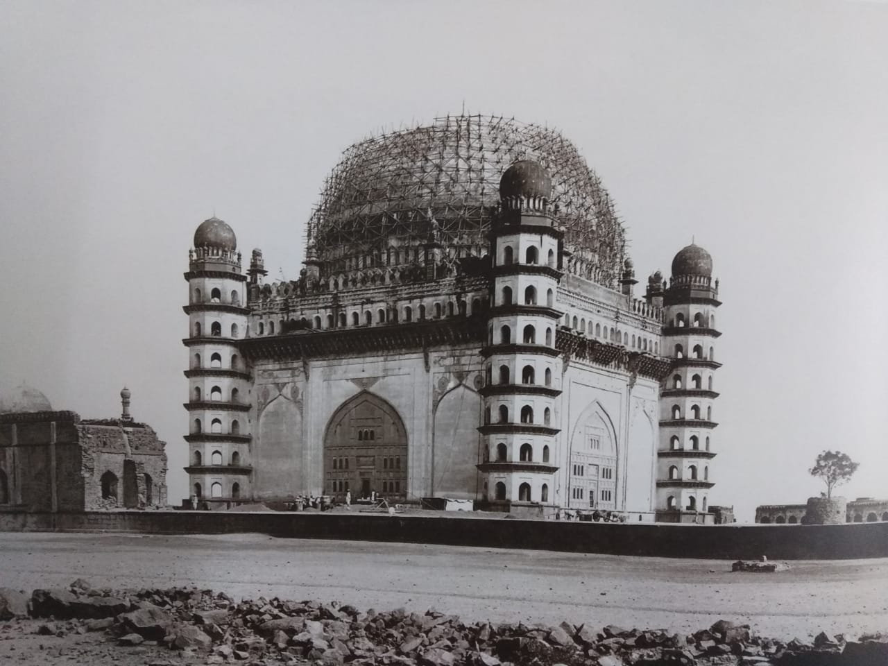

Gol Gumbaz (lit.'Round Dome'),also written Gol Gumbad,is a 17th-century mausoleum located in Bijapur, a city in Karnataka, India. It houses the remains of Mohammad Adil Shah, seventh sultan of the Adil Shahi dynasty, and some of his relatives. Begun in the mid-17th century, the structure never reached completion. The mausoleum is notable for its scale and exceptionally large dome. The building is one of those put by UNESCO on its "tentative list" to become a World Heritage Site in 2014, under the name Monuments and Forts of the Deccan Sultanate.
History
The construction of the Gol Gumbaz began in the mid-17th century, during the close of Mohammad Adil Shah's reign.It is located directly behind the dargah of Hashim Pir, a Sufi saint; Richard Eaton views this as suggestive of the close relationship between the ruler and the saint.The mausoleum was never completed; construction may have halted in 1656 due to Mohammad Adil Shah's death that year.

Architecture
The Gol Gumbaz is one of the most ambitious structures built by the Adil Shahi dynasty. It is the most technically advanced domed structure to have been erected in the Deccan, and one of the largest single-chamber structures in the world. The architect of the structure is not known. Bianca Alfieri asserts that the building's size was a conscious decision made by Mohammad Adil Shah in order to rival the architecture of the Ibrahim Rauza, the tomb of the ruler's predecessor Ibrahim Adil Shah II. Alternatively, Elizabeth Merklinger suggests that the size was an attempt to assert the stature of the Adil Shahi dynasty, in light of its later absorption by the Mughal Empire. The mausoleum is contained in a larger walled complex, with other buildings such as a mosque, a naqqar khana, and a dharmshala.